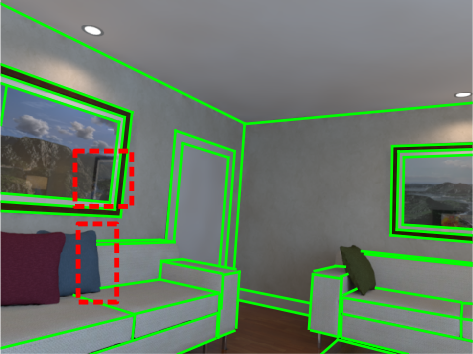
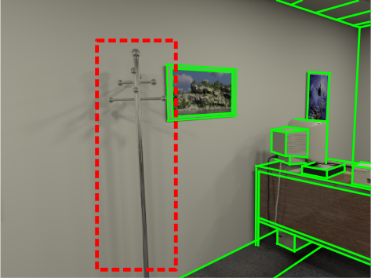
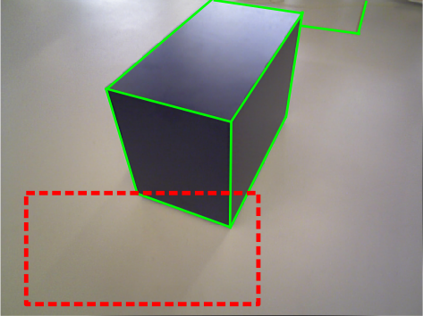

EVOLIN Benchmark: Evaluation of Line Detection and Association
Kirill Ivanov1,2,
Anastasiia Kornilova1,
Gonzalo Ferrer1
1 Skolkovo Institute of Science and Technology (Skoltech), Center for AI Technology (CAIT)
2 Software Engineering Department, Saint Petersburg State University



Examples of annotated lines (green) in ICL NUIM and TUM RGBD datasets from our benchmark.
Red indicates elements that were not annotated: reflections, elements that form lines from a certain
angle, and shadows
Abstract
Lines are interesting geometrical features commonly seen in
indoor and urban environments.
There is missing a complete benchmark where one can evaluate lines from
a sequential stream of images in all its stages: Line detection, Line Association and Pose error.
To do so, we present a complete and exhaustive benchmark for visual lines in a
SLAM front-end, both for RGB and RGBD, by providing a plethora of complementary metrics.
We have also labelled data from well-known SLAM datasets in order to have
all in one poses and accurately annotated lines.
In particular, we have evaluated 17 line detection algorithms,
5 line associations methods and the resultant pose error for aligning
a pair of frames with several combinations of detector-association.
We have packaged all methods and evaluations metrics and m
ade them publicly available.
Metrics
We also implemented a library
with detection and association metrics,
including metrics based on a heat map, metrics based on a vector representation of a line,
and repeatability metrics.
In addition, we implemented an algorithm for line-based relative pose estimation using the framework,
which allowed us to implement relative pose estimation metrics..
Datasets
To evaluate line detectors and associators,
we annotated lr kt2 and of kt2 trajectories from ICL NUIM,
as well as fr3/cabinet and fr1/desk trajectories from TUM RGB-D.
Only breaking segments have been annotated, such as ceilings, floors, walls, doors,
and furniture linear elements. The datasets can be downloaded here.
| Dataset |
Total lines |
Total frames |
Lines per Frame |
| lr kt2 |
189 |
881 |
47 |
| of kt2 |
346 |
881 |
78 |
| fr3/cabinet |
46 |
1147 |
13 |
| fr1/desk |
184 |
613 |
51 |
Citing this work
If you find this work useful in your research, please consider citing:
@article{evolin2023,
title={EVOLIN Benchmark: Evaluation of Line Detection and Association},
author={Kirill Ivanov, Gonzalo Ferrer, and Anastasiia Kornilova},
journal={arXiv preprint },
year={2023}}